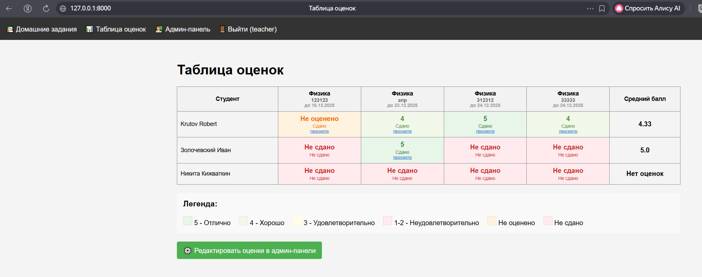
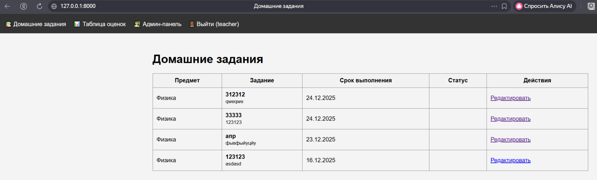
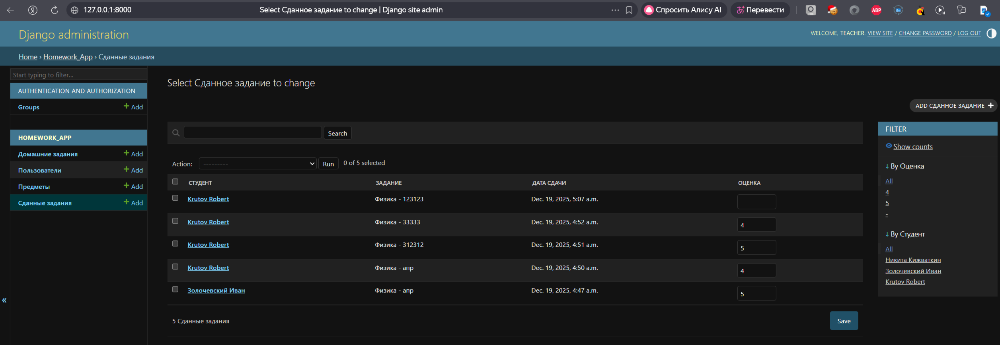
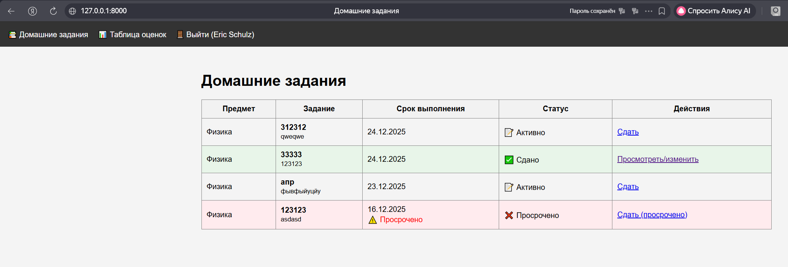
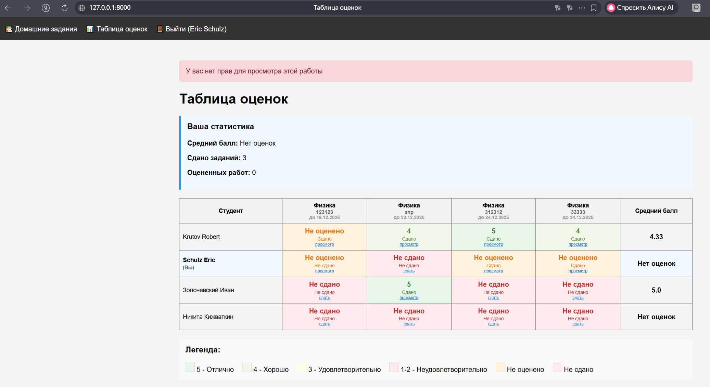

Лабораторная работа №2: Система управления домашними заданиями
1. Цель работы
Разработать веб-приложение для управления домашними заданиями с использованием Django Framework, реализующее функционал регистрации пользователей, просмотра заданий, сдачи решений и выставления оценок.
2. Задание
Создать систему управления домашними заданиями со следующим функционалом:
- Регистрация новых пользователей
- Просмотр домашних заданий по всем дисциплинам
- Сдача домашних заданий в текстовом виде
- Возможность для администратора (учителя) выставлять оценки через Django-admin
- Таблица оценок всех учеников класса в клиентской части
3. Реализация
3.1 Модели данных
В приложении реализованы следующие модели:
- Subject - предметы обучения
- Homework - домашние задания с полями:
- subject (предмет)
- teacher (преподаватель)
- title (название задания)
- description (текст задания)
- issued_date (дата выдачи)
- due_date (срок выполнения)
-
penalty_info (информация о штрафах)
-
HomeworkSubmission - сданные задания:
- homework (ссылка на задание)
- student (студент)
- submission_text (текст решения)
- submission_date (дата сдачи)
- grade (оценка)
- feedback (комментарий преподавателя)
3.2 Функционал системы
3.2.1 Аутентификация и авторизация
- Регистрация новых пользователей
- Вход в систему
- Разделение ролей: преподаватели (is_staff=True) и студенты
3.2.2 Просмотр заданий
- Для преподавателей: все задания
- Для студентов: все задания с цветовой индикацией статуса:
- Зеленый - сдано
- Красный - просрочено
- Белый - активно
3.2.3 Сдача заданий
- Текстовый редактор для написания решений
- Возможность редактирования уже сданных работ
- Индикация просроченных заданий
3.2.4 Административная панель
- Управление предметами, заданиями и пользователями
- Выставление оценок за сданные работы
- Добавление комментариев к работам
3.2.5 Таблица оценок
- Для преподавателей: оценки всех студентов
- Для студентов: только свои оценки
- Цветовая индикация оценок (зеленый - отлично, красный - неуд)
- Средний балл для каждого студента
- Ссылки на просмотр деталей сданных работ
4. Технические особенности
4.1 Используемые технологии
- Django 6.0
- SQLite3
- HTML/CSS для клиентской части
- Python 3.13
4.2 Основные модули Django
- django.contrib.auth - аутентификация пользователей
- django.contrib.admin - административная панель
- django.forms - формы для регистрации и сдачи заданий
- django.db.models - модели данных
- django.utils.timezone - работа с датами
4.3 Безопасность
- CSRF-защита всех форм
- Проверка прав доступа (@login_required, @user_passes_test)
- Разделение ролей пользователей
- Валидация входных данных
5. Инструкция по запуску
5.1 Установка зависимостей
pip install django
5.2 Инициализация проекта
python manage.py migrate
python manage.py createsuperuser
5.3 Запуск сервера
python manage.py runserver
5.4 Доступ к приложению
- Админ-панель: http://127.0.0.1:8000/admin/
- Таблица оценок: http://127.0.0.1:8000/grades/
- Домашние работы: http://127.0.0.1:8000/homework/
- Вход: http://127.0.0.1:8000/login/
6. Вывод
В ходе выполнения лабораторной работы было разработано полнофункциональное веб-приложение для управления домашними заданиями.
- Реализована регистрация и аутентификация пользователей
- Создан интерфейс для просмотра домашних заданий
- Реализована возможность сдачи заданий в текстовом виде
- Преподаватели могут выставлять оценки через Django-admin
- Реализована таблица оценок для всего класса
Приложение демонстрирует практическое применение основных концепций Django: модели, представления, шаблоны, формы и система аутентификации.
7. Пример работы:
7.1. Интерфейс учителя



7.2. Интерфейс ученика

